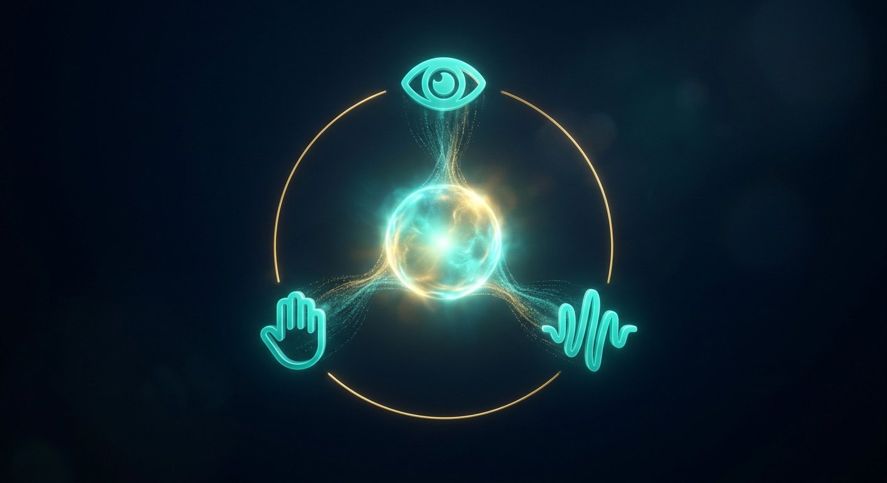

Vision, speech & multimodal
Beyond classify-the-cat: where is it, what is each pixel, what was said, and how do text and pixels share a space?

Figure 21.1 — Different encoders, one shared meaning space.
| Task | Output | Classic models |
|---|---|---|
| Detection | Boxes + classes | YOLO, Faster R-CNN, DETR |
| Segmentation | Per-pixel class / instance | U-Net, Mask R-CNN, SAM |
| Video | Tubes / tracks | 3D CNN, transformers |
| 3D / NeRF / Gaussian splats | Scene radiance | Neural rendering |
| ASR | Text from audio | Whisper-class Transformers |
| TTS | Speech from text | Spectrogram + vocoder / neural codecs |
| Multimodal | Shared embedding / any-to-any | CLIP, Flamingo, GPT-4o-class, Gemini-class |
CLIP trains image and text encoders so matching pairs sit nearby — the backbone of promptable image gen and zero-shot vision. Metrics: mAP, IoU, WER, CLIP-score — plus human eval.
Worked example — IoU and mean average precision
Predicted box area = 40, ground-truth box area = 40, their intersection = 30. IoU = 30 / (40 + 40 − 30) = 30/50 = 0.60. At an IoU threshold of 0.5 this is a true positive; at 0.75 it counts as a miss. mAP averages precision–recall across classes and IoU thresholds (0.5:0.95), so a classifier can be very accurate yet yield poor mAP when its boxes are loose or rare classes (pedestrian, traffic cone) are missed.
Speech pipelines, unrolled
ASR: waveform (16 kHz) → log-Mel filterbank frames → acoustic encoder (Conformer / Whisper-style Transformer) → text token decoder, with optional language identification and alignment for timestamps. TTS: text → normalisation and grapheme-to-phoneme → acoustic model predicting mel frames or audio tokens → vocoder / neural codec (e.g., EnCodec) → waveform. End-to-end models merge stages, but the interfaces still guide debugging: clipping or bad mic sampling breaks the mel stage; hallucinated words point at the decoder/language model.
Multimodal fusion comes in three styles: early (raw streams projected to one shared space, like CLIP), late (separate models whose outputs vote), and deep/cross-attention (streams attend to each other inside a Transformer, as in Flamingo/GPT-4o-class systems).
Short notes
Localisation tasks need different heads and losses (box regression, Dice/IoU). Speech is a sequence problem now solved a lot like NLP. Multimodal = shared or gated Transformers over mixed tokens.
Point notes
- mAP for detection; IoU for overlap.
- U-Net = encoder–decoder skips.
- WER for ASR.
- CLIP = contrastive image–text.
MCQs
5 questions · scored1. Semantic segmentation predicts:
2. CLIP is trained with:
3. WER is used for:
4. Intersection-over-Union (IoU) is used to:
5. In a modern text-to-speech pipeline, the vocoder's job is to:
P1. Why is ImageNet top-1 a poor standalone metric for a self-driving stack?
Driving needs localisation, tracking, depth, rare-class recall (child, cone), calibration, latency, and night/rain shift. A 76% ImageNet net can still miss a pedestrian. Task metrics and operational design domain matter.
P2. Word error rate is the headline ASR metric. Name two kinds of failure it hides.
WER = (substitutions + deletions + insertions) / reference words, so a single dropped “not” costs one error but flips the meaning — semantic and slot errors are invisible; it also ignores punctuation/casing, speaker diarisation, disfluency handling, accent fairness and how often the downstream agent still completes the task. Add semantic/slot-value accuracy, named-entity correctness and task-success evaluation for voice products.
P3. Explain why CLIP allows zero-shot image classification with no classifier training.
Contrastive training aligns an image encoder and a text encoder so that matched (image, caption) pairs have high cosine similarity and unmatched pairs low. At test time embed candidate labels as prompt text (“a photo of a {label}”), embed the image, and assign the label with nearest embedding — no class-specific head or label examples needed. The same aligned space enables image search by text and vision-language models.